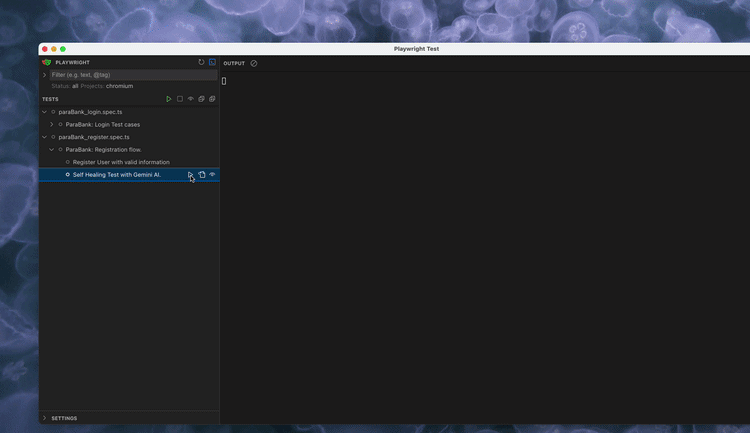

Self Healing Automation tests using Google Gemini
I was intrigued by the idea of a cloud based LLM to create a self-healing leveraging the capabilities of Google Gemini to build a self-healing layer for Playwright tests. In this article, I share the approach I took to integrate Gemini into a Playwright setup, along with some of the benefits and challenges I encountered along the way.
Read more